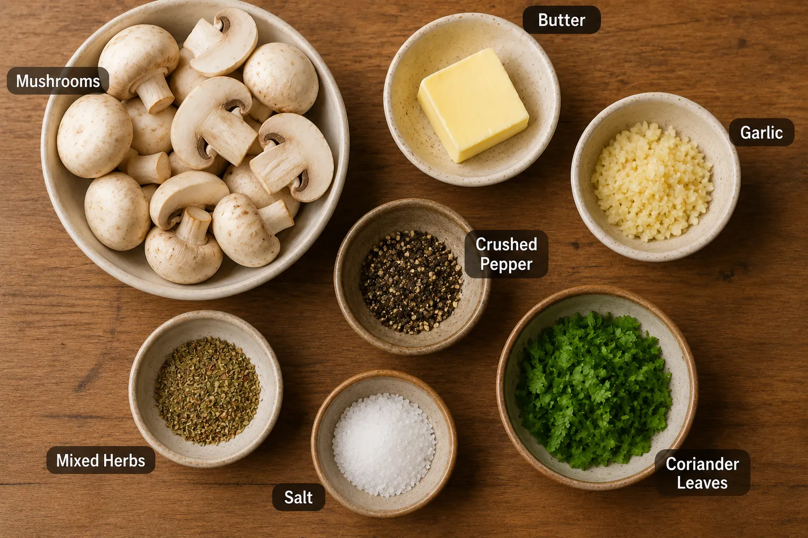
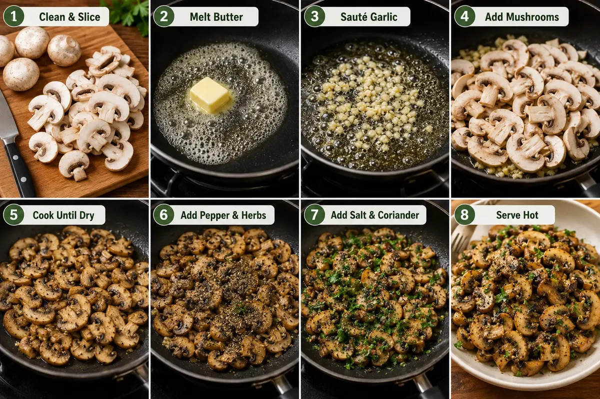

These garlic mushrooms are a simple, flavorful appetizer made with button mushrooms, butter, garlic and herbs. They come together quickly in one pan, making them a convenient option when you want a warm, savory snack without a complicated preparation.
Ingredients

How to Make Butter Garlic Mushrooms Step by Step
Prepare the Mushrooms
Rinse and clean mushroom well, slice thin and set aside. Melt 1 tablespoon butter in a pan.
Add the Garlic
Add 1 tablespoon minced garlic.
Sauté the Garlic
Sauté for 2 minutes on low flame until it turns slightly golden.
Add the Mushrooms
Then add the mushrooms to the pan.
Sauté and Cook
Sauté for a minute, let it cook for a minute, then sauté again.
Cook Until Dry
The mushrooms will leave out water, so sauté and cook until dry.
Add Pepper and Herbs
Add 1 teaspoon crushed pepper and 1 teaspoon mixed herbs.
Give a Quick Sauté
Give everything a quick sauté so the mushrooms are evenly coated with the seasoning.
Add Salt and Coriander
Add required salt and 1 tablespoon finely chopped coriander leaves.
Finish Cooking
Sauté for a minute, then switch off the heat.
Serve Hot
Garlic Mushrooms are ready! Serve hot with toast!

Quick Tip
For better texture, avoid overcrowding the pan while cooking the mushrooms. Give them enough space to sauté properly so they become nicely browned instead of turning too soft.
Serving Suggestion
Garlic Mushrooms are ready! Serve hot with toast.